かに風味ブログ
-
にわのにぎわい
イタリアントマト。どうにも勢いが止まらず。大豊作でした。 しかし生食はなんとも難しいお味。乾燥地や痩せた土地に強いのが、放置プレイ栽培で功を奏したのか。 小玉スイカ。まだ未収穫。現在ミニ小玉スイカ…
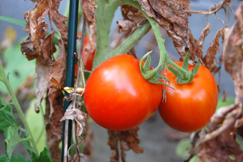
-
てんぷら
えへへ。銀座で天麩羅いただきました。 早松。香りがいいなぁ。 車えび三本。ぜいたくだー。 椎茸にきす。椎茸には海老が詰めてあるのかなー。んまい。 蟹とアスパラ 大将。天麩羅はやっぱ…
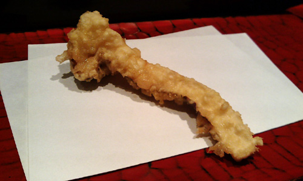
-
ここ最近のほにゃらら
なぜか空港にくす玉。引っ張りたい衝動に駆られながらも出発。 えーっと。品川駅でチャーハン。たまにこっちに戻ると人の多さでくーらくら。目にも耳にも鼻にも情報が大量に入ってきて、あーこれが都会とゆーもの…

-
最近の浜事情
雨やら出張やらバス旅やらで浜を歩いていない今日このごろー。 浜辺のガンマン 雨か殺人光線的紫外線日和かで、浜あるきにはちょいと辛い時期ですなー。。。 そんなこんなの浜の出会い。ちょい渋好みな…
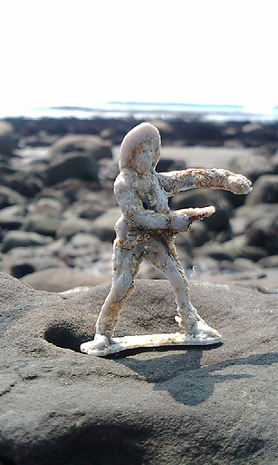
-
ちょびっと日帰り
九州3日間バス乗り放題1万円とゆーのがあると知り、ちょびっと旅行。 長距離高速バスに乗るの久しぶりだー。 結構ゆったり目でらくちん。 なぜか一番前の席だった。一番前の席って、足が伸ばせないから あんま…
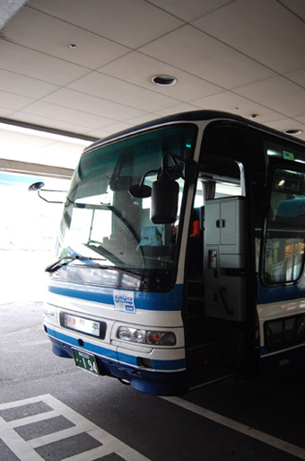
-
ダニ・カラヴァン
無性にダニ・カラヴァンの「ベレシート」が見たくて、霧島アートの森に。 ここはひょいと「上野の森の美術館にモネを見に行こうかな～」…というノリで行けるような…とこではなく、どちらかとゆーと「再来週に南ア…
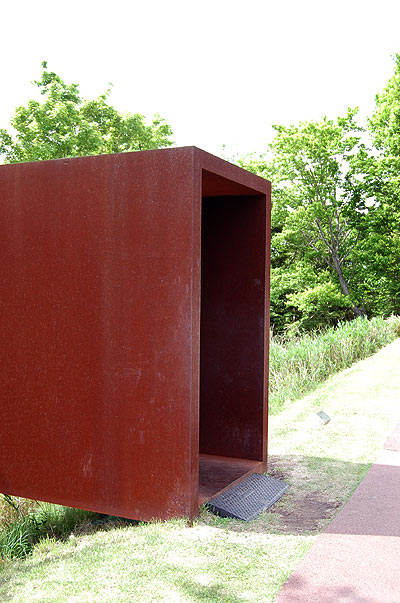
-
難しい～
リクエストをいただいたので…白磁も こちらは内側かと。。。左側が見込みで、右端が縁です。 想像すると、たぶん直径10センチくらいの小皿なのではないかなーと。 白磁は難しくて、拾ってもしばらく手のひ…
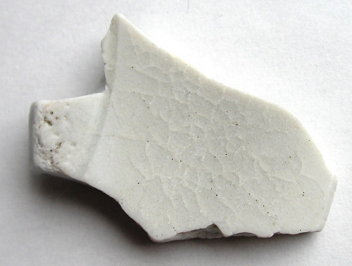
-
へちま
ひるまにすごーく潮が引くようになりましたねー。 これからが楽しい季節だけど、こちらは直射日光下きびしい季節となってまいりました。 仕事前に自転車飛ばして浜に行って、帰ってくるとゆーことをしばしば。 …

-
うひゃ！
引っ越し前までは、会社は大きな複合商業ビルで、レストランやらコンビニやら、仕出しベントー屋さんやら、近所もロッテリアやら吉野家やらで、お昼とゆーものに困ったことなかったのだけど、こっちに引っ越してみた…

-
とかい
昨日は日帰り東京出張でした。 最近たびたび打ち合わせで日帰り出張。 飛行機大好き人なので、ぜんぜん苦に感じないのが唯一救い。 雨が降っていて「寒いなー…」なんてちょいと思いながら、都心に出てお昼。…

-
りょうり
今住んでいる家は、2年間限定の超激安破格物件なのですが、もともとモデルハウスに使われていたとゆーお家なのでした。 そんなわけで、キッチンも立派なシステムキッチン。食洗機とコンベクションオーブンと、ゴミ…

-
ですね～♪
1週間関東に出稼ぎ？にでておりましたー。 さてさて引き続き、謎の青磁。 薄い溝が入っております。お皿だったのかしらん？ また週末に海にでかけてまいります！
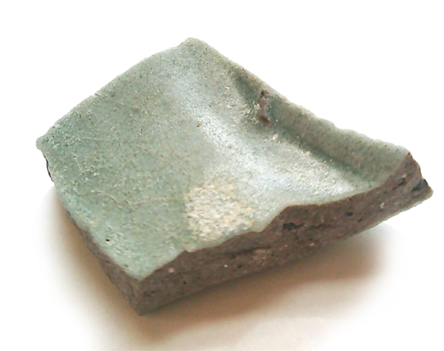
-
やほ～
本日も開拓地へ。今日は先週と比べてだいぶ潮が引くのでちょいと楽しみに出かけてまいりました。 そんな本日の出会いはこんなかんじ。 統制陶器はじめて拾いましたー 真ん中の陶片は椀蓋かな。障子と庭っぽい図…
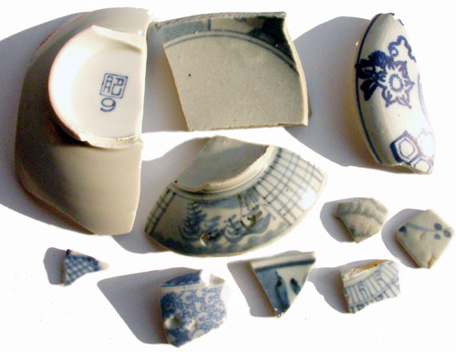
-
陶片サイト
陶片ポイントを探して海岸開拓中 薄ーーーい五弁花（たぶん）発見。 左下は青磁。断面は気泡多めのコンクリートをコーティングしたような感じ。いままで知っている青磁とちょっと違います。。。 鶴亀のおめでたい…
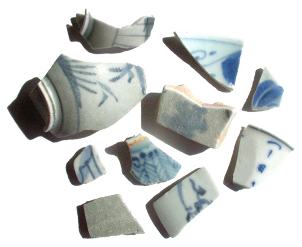
-
ひろいぞめ
正月早々風邪を引いたりしております。 ハナずるずるのひろいぞめです。 細かなものをぽつぽつと。 ３連休は南下してみようかなーと。
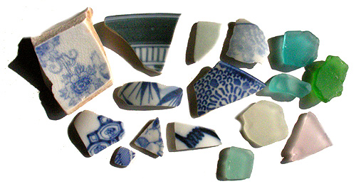
-
＞しのやん
あいかわらずバタバタしてましてー しあさってはまた関東に戻って、そのまま年越しかー？とゆーよなーどーなのだろか？ こないだ出社したときに、徹夜用非常食として同僚からもらった缶詰。 相変わら…
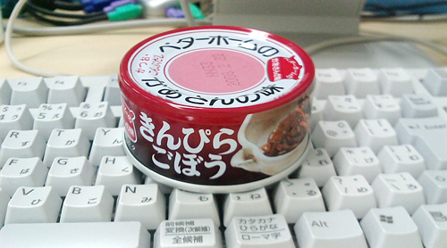
-
ことしもよろしくおねがいします
年末年始どたばたしておりましたー。 あいかわらずの気ままな更新ですが、引き続きおつきあいいただけますよう よろしくお願いいたします！ 写真は実家のマメ。 年々貫禄がついてきているのですがー
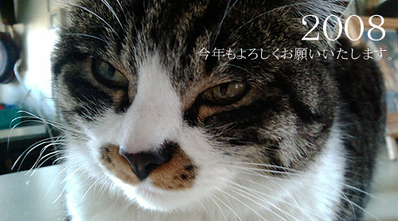
-
拾いおさめ
こちらでの拾い納めはこんなかんじ どうも、私が通っている陶片がある浜は、もう私が拾い尽くした感じが… 資源の枯渇。重要な問題です。。。 上部の白いものはIDEALと書かれた化粧瓶のかけら。 貝、カ…

-
年末年始のわたくし
年末は20日から関東上陸。 26日までみっちりワタワタな状態が続いていて記憶が… 会社に泊まったり、近くのスパで土方のおじちゃん達に囲まれながら仮眠したりしておりました。ぐーぐーぐーぼりぼりぐーぐーぐ…

-
引っ越し後の昼ご飯のいくつか
だいたい昨日の余り物でつくるチャーハンかパスタで適当にすますのでした。 納豆レタスちゃーはん こちらはなんだかめちゃくちゃ刺身が安くて美味しいので、昼休みにチャリチャリ自転車こいで近くのスーパーま…